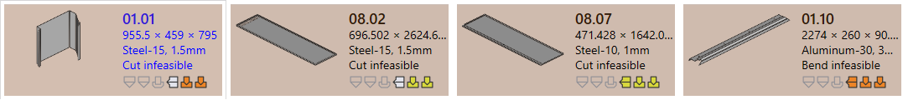
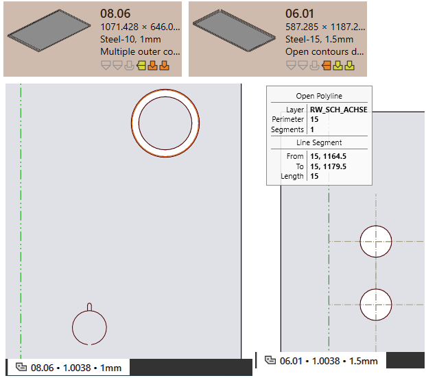
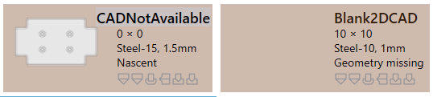
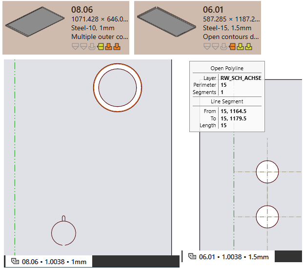
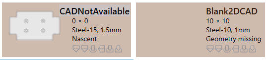
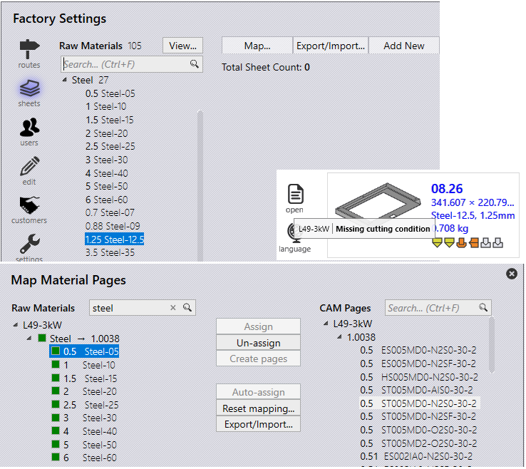

Validation de la pièce
Erreur CAO
Infaisable (plier et couper)
-
JFY Plus attribue l’état Pliage infaisable à la pièce si aucun programme de pliage valide n’est trouvé pendant le montage automatique.
-
Si le programme de pliage [08.07] comporte un avertissement, il sera automatiquement ignoré et un programme de coupe est examiné.
-
L’état Coupe infaisable est attribué à la pièce si aucun programme de coupe réalisable n’est trouvé.
 === Erreur Matière - Matière manquante : épaisseur lue initialement à partir du modèle et matière attribuée, vérifiée par rapport à la matière première JFY Plus. Si elle n’existe pas, alors une erreur Matière manquante lui est assignée. - _Material not assigned : le modèle ne comporte pas de champ mappé par rapport à la matière, l’erreur Matière non attribuée lui est alors assignée.
 === Erreur Géométrie
- Open contours detected : la CAO comprend une entité ouverte.
- Multiple outer contours detected : la CAO comprend plusieurs boucles fermées.

- Naissante : lors du chargement de la pièce à partir de la feuille de calcul csv ou xlsx, les fichiers CAO manquants sont créés en tant qu’Erreur Pièce naissante.
- Geometry missing : la CAO n’a pas de géométrie valide ou n’est pas disponible.

== Erreur FAO
=== Erreur Montage de pliage
=== Erreur Géométrie
- Open contours detected : la CAO comprend une entité ouverte.
- Multiple outer contours detected : la CAO comprend plusieurs boucles fermées.

- Naissante : lors du chargement de la pièce à partir de la feuille de calcul csv ou xlsx, les fichiers CAO manquants sont créés en tant qu’Erreur Pièce naissante.
- Geometry missing : la CAO n’a pas de géométrie valide ou n’est pas disponible.

== Erreur FAO
=== Erreur Montage de pliage
Voici les erreurs de montage de pliage.
-
Collisions detected et Gripper error.
 - Overload error d’outil et Trou près de la ligne de pliage.
- Overload error d’outil et Trou près de la ligne de pliage.
 - Needs review et Envergure de matrice/poinçon courte.
- Needs review et Envergure de matrice/poinçon courte.
 - Tool missing, Poor backguage, Pièce trop grande pour la machine.
- Tool missing, Poor backguage, Pièce trop grande pour la machine.

Voici les erreurs de montage de coupe.
-
Condition de coupe manquante non mappée par rapport à la matière première.
 - Erreur de débouchures de poinçonnage : pour le montage de poinçon, la boucle intérieure est montée sans joints. - Untooled or partially tooled contours : segments montés de poinçon manquants.